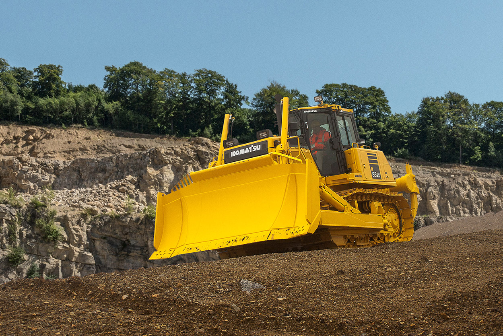

Спецпартс49. Ближе к делу.
Запасные части, комплектующие и расходные материалы для горнодобывающей и дорожно-строительной спецтехники. Основные производители техники — Caterpillar и Komatsu.
Торговое предприятие
в Магадане
ООО «Спецпартс49» зарегистрировано 12 февраля 2024 года. Краткое наименование — ООО «СП49».
Предприятие специализируется на горнодобывающей и дорожно-строительной спецтехнике: бульдозерах, погрузчиках, карьерных самосвалах и грейдерах. Основное направление — техника Caterpillar и Komatsu.
На сайте можно ознакомиться с девятью группами товаров, собрать список нужных позиций и подготовить запрос с моделью и серийным номером техники.
С грузовой колесной и легковой техникой предприятие не работает.
Открыть каталог
Что можно сделать на сайте
Найти направление
Выберите группу: ДВС, трансмиссия, электрическая, гидравлическая, топливная, тормозная система, охлаждение, фильтры или узлы и агрегаты.
Описать задачу
Укажите марку и модель техники, артикул и количество необходимых деталей.
Подготовить список
Добавьте позиции в запрос и сохраните его, чтобы обсудить условия поставки.
Реквизиты компании
Справочные сведения из открытых источников. Адрес офиса и склада будет добавлен отдельно.
Источник: РБК Компании ↗- Наименование
- ООО «Спецпартс49» / ООО «СП49»
- ИНН
- 4900015825
- КПП
- 490001001
- ОГРН
- 1244900000201
- Регистрация
- 12 февраля 2024
- Юридический адрес
- г. Магадан, ул. Кольцевая, д. 3